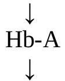
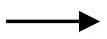

Thalassemia
LEARNING OBJECTIVES
- Hereditary disorder that can result in moderate to severe anemia.
- Basic defect is reduced production of selected globin chains.
- An imbalance of globin chain production results in the accumulation of free globin chains in the red blood cell precursors, which, being insoluble, precipitate, resulting in hemolysis of the red blood cells
- Underproduction of the alpha globin chain results in alpha-thalassemia.
- Underproduction of the beta globin chain results in beta-thalassemia.
Pathogenesis:
- Genetically determined.
- Heterogenous group of disorder.
- Reduced synthesis of one or more types of normal hemoglobin polypeptide chain.
- Reduced hemoglobin involving affected chain.
Normal Hemoglobin:
- $\mathrm{HbA}-\alpha 2 \beta 2$
- $\mathrm{HbA} 2-\alpha 2 \delta 2$
- $\mathrm{HbF}-\alpha 2 \gamma 2$
Each globin chain has separate genetic control.
$\boldsymbol{\alpha}$-thalassemia affect $\boldsymbol{\alpha}$-chain synthesis.
$\boldsymbol{\beta}$-thalassemia affect $\boldsymbol{\beta}$-chain synthesis.
$\alpha$-Thalassemia:
Definition:
An absence or deficiency of $\boldsymbol{\alpha}$-chain synthesis due to deletion of $\alpha$-genes.
Symbolism:
Alpha Thalassemia:
Greek letter used to designate globin chain: $\boldsymbol{\alpha}$
/: Indicates division between genes inherited from both parents:
$\alpha \alpha / \alpha \alpha$
- Each chromosome 16 carries 2 genes. Therefore the total complement of $\alpha$ genes in an individual is 4 .
: Indicates a gene deletion:
$-\alpha / \alpha \alpha$
Classification & Terminology
Alpha Thalassemia
- Normal $\alpha \alpha / \alpha \alpha$
- Silent carrier $-\alpha / \alpha \alpha$
- Minor $-\alpha /-\alpha$
- $--/ \alpha \alpha$
- Hb H disease --/- $\alpha$
- Barts hydrops fetalis --/--
Pathogenesis of $\boldsymbol{\alpha}$-Thalassemia
- In normal individual $\mathrm{HbA}, \mathrm{HbA} 2$ and HbF need $\alpha$-chain for their formation.
- 4 genes of $\alpha$-chain, each pair on short arm of chromosome 16 present with genotype $\alpha, \alpha / \alpha, \alpha$.
- In $\alpha$-thalassemia, deletion of $\alpha$-genes reduction or absence of synthesis of $\alpha$ chain depending on number of $\alpha$-gene deletion.
- $\downarrow \alpha$-chain synthesis free $\gamma$-chain in the fetus & $\beta$-chain in infant of 6 months, and continue in the rest of life.
- Complementary $4 \gamma$ and $4 \beta$ are aggregated $\quad \mathrm{Hb}-\mathrm{Bart}(4 \gamma)$ and $\mathrm{HbH}(4 \beta)$, respectively.
Variants of $\boldsymbol{\alpha}$-Thalassemia
Silent carrier
- Deletion of single $\alpha$-gene
- Genotype $\alpha / \alpha \alpha$
- Asymptomatic
- Absence of RBC abnormality
Thalassemia trait
- Deletion of $2 \alpha$-genes
- Genotype --/ $\alpha \alpha$
- Asymptomatic, minimal or no anemia.
- Minimal RBC abnormalities.
Hb H disease
- Deletion of $3 \alpha$-genes
- Genotype --/- $\alpha$
- $75 \%$ reduction of $\alpha$-chain
- $25 \% \alpha$-chain synthesis >> small amount of HbF, HbA, & HbA2
- Fetus can survive.
- Severe anemia.
- Severe RBC abnormalities.
Hydrops fetalis
- Deletion of all $\alpha$-genes
- Genotype --/--
- Absence of $\alpha$-chain synthesis
- Only Hb Bart ( $\gamma 4$ ) is produced (High affinity for O2 and can not dissociate O2 to tissue).
$\beta$-Thalassemia
Definition:
An absence or deficiency of $\beta$-chain synthesis of adult HbA .
$\beta$ Chain synthesis
$\gamma$ and $\delta$ chain
$\mathrm{Hb}-\mathrm{A}=\alpha 2 \beta 2$
Symbolism
Beta Thalassemia
- Greek letter used to designate globin chain:
$\boldsymbol{\beta}$
+: Indicates diminished, but some production of globin chain by gene:
$\beta^{+}$
$\mathbf{0}$ : Indicates no production of globin chain by gene:
$\boldsymbol{\beta} \mathbf{0}$
Classification & Terminology
Beta Thalassemia
- Normal
- Minor
- Intermedia
- Major
- $\beta / \beta$
- $\beta / \beta 0$
- $\beta / \beta+$
- $\beta 0 / \beta+$
- $\beta 0 / \beta 0$
- $\beta+/ \beta+$
$\beta$-thalassemia major
- Mutation of normal $\beta$-gene $\rightarrow \beta 0$-gene $\rightarrow$ absence $\mathrm{HbA} \rightarrow$ increased HbA 2 and HbF
- genotype - $\beta 0 \beta 0$
$\beta$-thalassemia intermedia
- $\uparrow \mathrm{HbA} 2$
- $\uparrow \mathrm{HbF}$
- $\downarrow \mathrm{HbA}$
- Genotype $\beta+\beta+$ or $\beta 0 \beta$
$\beta$-thalassaemia minor
- $\uparrow \mathrm{HbA} 2$
- HbA normal
- HbF normal
Pathophysiology of $\boldsymbol{\beta}$-Thalassemia:
- Various mutations in $\beta$-gene
- $\downarrow$
- Complete or partial absence of $\beta$-chain
- $\downarrow$
- Decreased adult HbA
- $\downarrow$
- $\alpha$-chain synthesis remain normal
- $\downarrow$
- Free complementary $\alpha$-chain - unstable and precipitate within normoblasts as insoluble inclusions
- $\downarrow$
- Cell membrane damage & impaired DNA synthesis apoptosis i.e. ineffective erythropoeisis
- 70-80\% marrow normoblasts undergo apoptosis
- Inclusion bearing red cells undergo sequestration & destruction in spleen
Special Cases Thalassemia:
Hb Lepore:
$\beta \delta$ fusion seen in some types of $\beta \delta$ thalassemia
Hb Constant Spring:
- $\alpha$ chain with 31 additional amino acids
- $--/ \alpha^{\mathrm{cs}} \alpha$
Hereditary persistence of fetal hemoglobin (HPFH)
- HbH
- $\beta 4$ tetramer
- Associated with --/- $\alpha$ thalassemia
- Hb Barts & hydrops fetalis
- Barts is a $\gamma 4$ tetramer
- Associated with --/--
- Lethal
- High concentrations are capable of sickling
LAB INVESTIGATIONS
Primary Laboratory Investigation
Variable hemogram results proportional to the severity of the thalassemia.
- Severe cases present with
- Microcytosis
- Hypochromia
- Poikilocytosis
- RBC counts higher than expected for the level of anemia
- Findings in severe cases can mimic those seen in other microcytic/hypochromic anemia.
- Results of the reticulocyte count are variable
- NRBCs may be present (contrast with iron deficiency anemia)
Secondary Laboratory Investigation
Hemoglobin electrophoresis
- Major test for identifying thalassemia and hemoglobinopathy.
Types
- Cellulose acetate: Alkaline pH
- Citrate agar: Acid ph
Conclusion:
In retrospect, it is fortunate that the hemoglobinopathies were the first group of genetic diseases to be examined at a molecular level, because they exhibit such a diversity of molecular pathology.